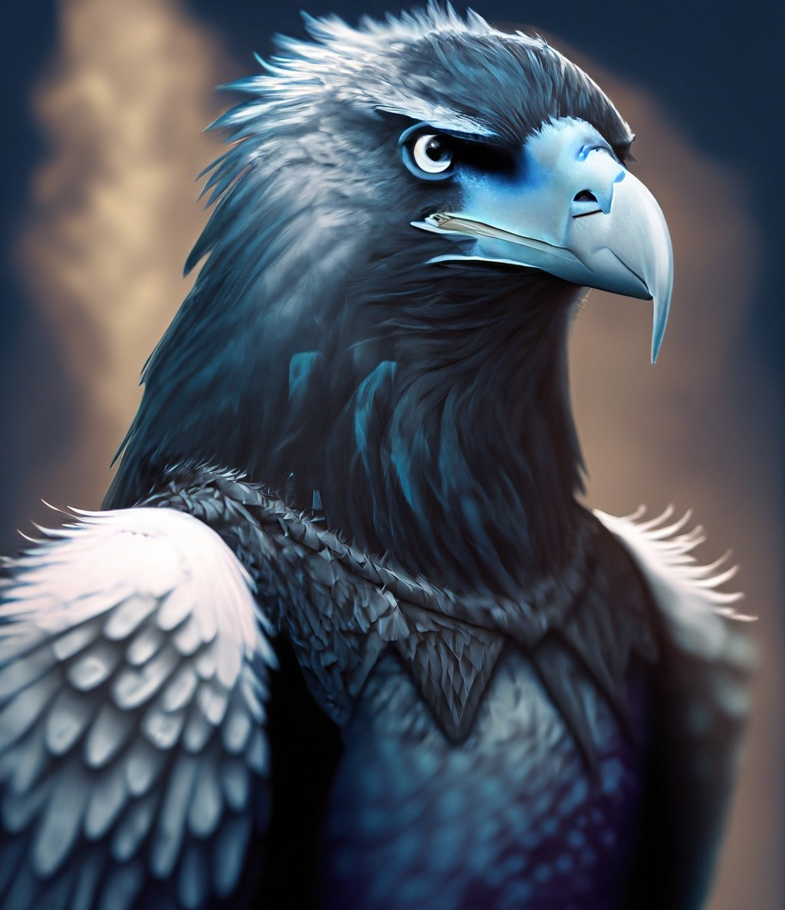
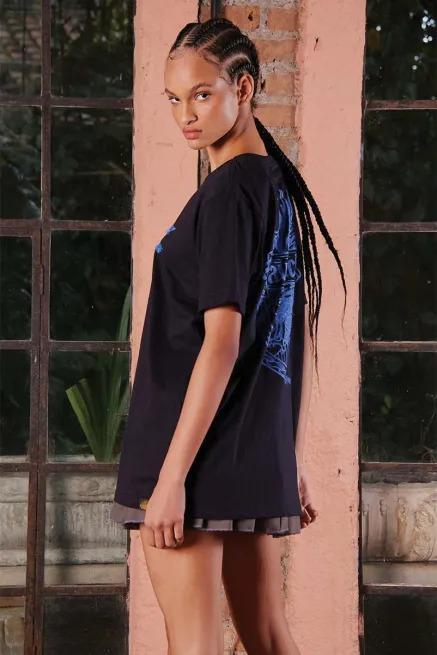
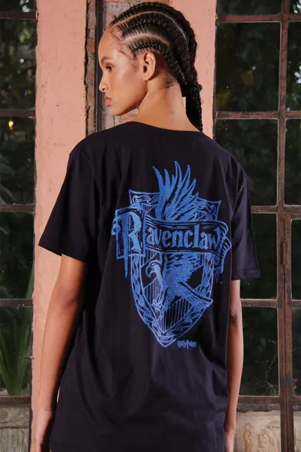
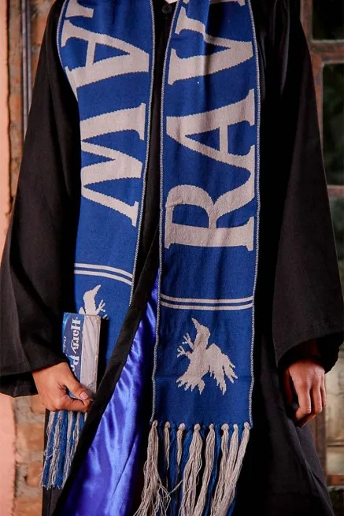
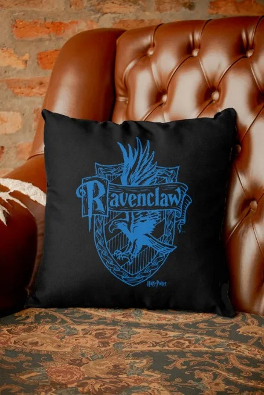

Bem-vindo a página da Corvinal de Hogwarts! Aqui, você encontrará informações detalhadas sobre uma das quatro casas da famosa escola de bruxaria e magia.
A Corvinal é conhecida por suas características distintas, como inteligência, sabedoria e criatividade. Os membros desta casa são perspicazes e curiosos, sempre em busca do conhecimento e da compreensão do mundo ao seu redor. Eles valorizam a originalidade e a inovação, buscando soluções únicas para os desafios que encontram.
Se você é um estudante da Corvinal, pode esperar ser estimulado intelectualmente em várias ocasiões. A casa valoriza o aprendizado e a busca pelo conhecimento, incentivando seus membros a se dedicarem aos estudos e a explorarem áreas de interesse pessoal. Você encontrará colegas de casa igualmente ávidos por aprender e compartilhar descobertas.

A Corvinal é liderada pela águia, um animal que representa sabedoria e visão. A cor da casa é azul e prata, e seu fundador foi Rowena Ravenclaw, uma bruxa famosa por sua inteligência e perspicácia.
Na Corvinal, você terá a oportunidade de aprimorar suas habilidades mágicas com os professores mais renomados da escola. Além disso, poderá participar de atividades extracurriculares que estimulam a criatividade e a exploração intelectual, como o Clube de Adivinhação e o Clube de Xadrez Mágico.
Se você é curioso e valoriza o conhecimento, a Corvinal é a casa perfeita para você. Junte-se a nós e faça parte dessa comunidade incrível de bruxos e bruxas que buscam sabedoria, criatividade e magia.
Shop Corvinal

Camisa
Camisa
U$65

Camisa
Camisa
U$65

Cachecol
Cachecol
U$30

Almofada